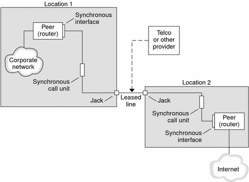

Previous
Previous
Comparison of Dial-up and Leased-Line Links
Both dial-up and leased-line links involve two peers that are connected by a communications medium. The next table summarizes the differences between the link types.
Leased Line | Dial-up Line |
|---|---|
Always connected, unless a system administrator or power failure takes the leased-line down. | Initiated on demand, when a user tries to call a remote peer. |
Uses synchronous and asynchronous communications. For asynchronous communications, a long-haul modem is often used. | Uses asynchronous communications. |
Rented from a provider. | Uses existing telephone lines. |
Requires synchronous units. | Uses less costly modems. |
Requires synchronous ports, which are common on most SPARC systems. However, synchronous ports are not common on x86 systems and newer SPARC systems. | Uses standard serial interfaces that are included on most computers. |
Parts of a Leased-Line PPP Link
See the following figure.
Figure 15-3 Basic Leased-Line ConfigurationThe leased-line link contains the following parts:
Two peers, each peer at one end of the link. Each peer might be a workstation or server. Often the peer functions as a router between its network or the Internet, and the opposite peer.
Synchronous interface on each peer. Some machines that run Solaris software require you to purchase a synchronous interface card, such as HSI/P, to connect to a leased line. Other machines, such as UltraSPARC workstations, have built-in synchronous interfaces.
CSU/DSU synchronous digital unit on each peer, which connects the synchronous port to the leased line.
A CSU might be built-in to the DSU, or owned by you, or leased from a provider, depending on your locale. The DSU gives the Solaris machine a standard synchronous serial interface. With Frame Relay, the Frame Relay Access Device (FRAD) performs the serial interface adaptation.
Leased line, providing switched or unswitched digital services. Some examples are SONET/SDH, Frame Relay PVC, and T1.
What Happens During Leased-Line Communications
On most types of leased lines, peers do not actually dial each other. Rather, a company purchases a leased-line service to connect explicitly between two fixed locations. Sometimes the two peers at either end of the leased line are at different physical locations of the same company. Another scenario is a company that sets up a router on a leased line that is connected to an ISP.
Leased lines are less commonly used than dial-up links, though the hardwired links are easier to set up. Hardwired links do not require chat scripts. Authentication is often not used because both peers are known to each other when a line is leased. After the two peers initiate PPP over the link, the link stays active. A leased-line link remains active unless the line fails, or either peer explicitly terminates the link.
A peer on a leased line that runs Solaris PPP 4.0 uses most of the same configuration files that define a dial-up link.
The following process occurs to initiate communication over the leased line:
Each peer machine runs the pppd command as part of the booting process or another administrative script.
The peers read their PPP configuration files.
The peers negotiate communications parameters.
An IP link is established.
PPP Authentication
Authentication is the process of verifying that a user is who he or she claims to be. The UNIX login sequence is a simple form of authentication:
The login command prompts the user for a name and password.
login then attempts to authenticate the user by looking up the typed user name and password in the password database.
If the database contains the user name and password, then the user is authenticated and given access to the system. If the database does not contain the user name and password, the user is denied access to the system.
By default, Solaris PPP 4.0 does not demand authentication on machines that do not have a default route specified. Thus, a local machine without a default route does not authenticate remote callers. Conversely, if a machine does have a default route defined, the machine always authenticates remote callers.
You might use PPP authentication protocols to verify the identity of callers who are trying to set up a PPP link to your machine. Conversely, you must configure PPP authentication information if your local machine must call peers that authenticate callers.
Authenticators and Authenticatees
The calling machine on a PPP link is considered the authenticatee because the caller must prove its identity to the remote peer. The peer is considered the authenticator. The authenticator looks up the caller's identity in the appropriate PPP files for the security protocol and authenticates or does not authenticate the caller.
You typically configure PPP authentication for a dial-up link. When the call begins, the dial-out machine is the authenticatee. The dial-in server is the authenticator. The server has a database in the form of a secrets file. This file lists all users who are granted permission to set up a PPP link to the server. Think of these users as trusted callers.
Some dial-out machines require remote peers to provide authentication information when responding to the dial-out machine's call. Then their roles are reversed: the remote peer becomes the authenticatee and the dial-out machine the authenticator.
Note - PPP 4.0 does not prevent authentication by leased-line peers, but authentication is not often used in leased-line links. The nature of leased-line contracts usually means that both participants on the ends of the line are known to each other. Both participants often are trusted. However, because PPP authentication is not that difficult to administer, you should seriously consider implementing authentication for leased lines.
PPP Authentication Protocols
The PPP authentication protocols are Password Authentication Protocol (PAP) and Challenge-Handshake Authentication Protocol (CHAP). Each protocol uses a secrets database that contains identification information, or security credentials, for each caller that is permitted to link to the local machine. For a detailed explanation of PAP, see Password Authentication Protocol (PAP). For a CHAP explanation, see Challenge-Handshake Authentication Protocol (CHAP).
Why Use PPP Authentication?
Providing authentication on a PPP link is optional. Moreover, though authentication does verify that a peer is to be trusted, PPP authentication does not provide confidentiality of data. For confidentiality, use encryption software, such as IPsec, PGP, SSL, Kerberos, and the Solaris Secure Shell.
Note - Solaris PPP 4.0 does not implement the PPP Encryption Control Protocol (ECP), which is described in RFC 1968.
Consider implementing PPP authentication in the following situations:
Your company accepts incoming calls from users over the public, switched telephone network.
Your corporate security policy requires remote users to provide authentication credentials when accessing your network through a corporate firewall or when engaging in secure transactions.
You want to authenticate callers against a standard UNIX password database, such as /etc/passwd, NIS, NIS+, LDAP, or PAM. Use PAP authentication for this scenario.
Your company's dial-in servers also provide the network's Internet connection. Use PAP authentication for this scenario.
The serial line is less secure than the password database on the machine or networks at either end of the link. Use CHAP authentication for this scenario.